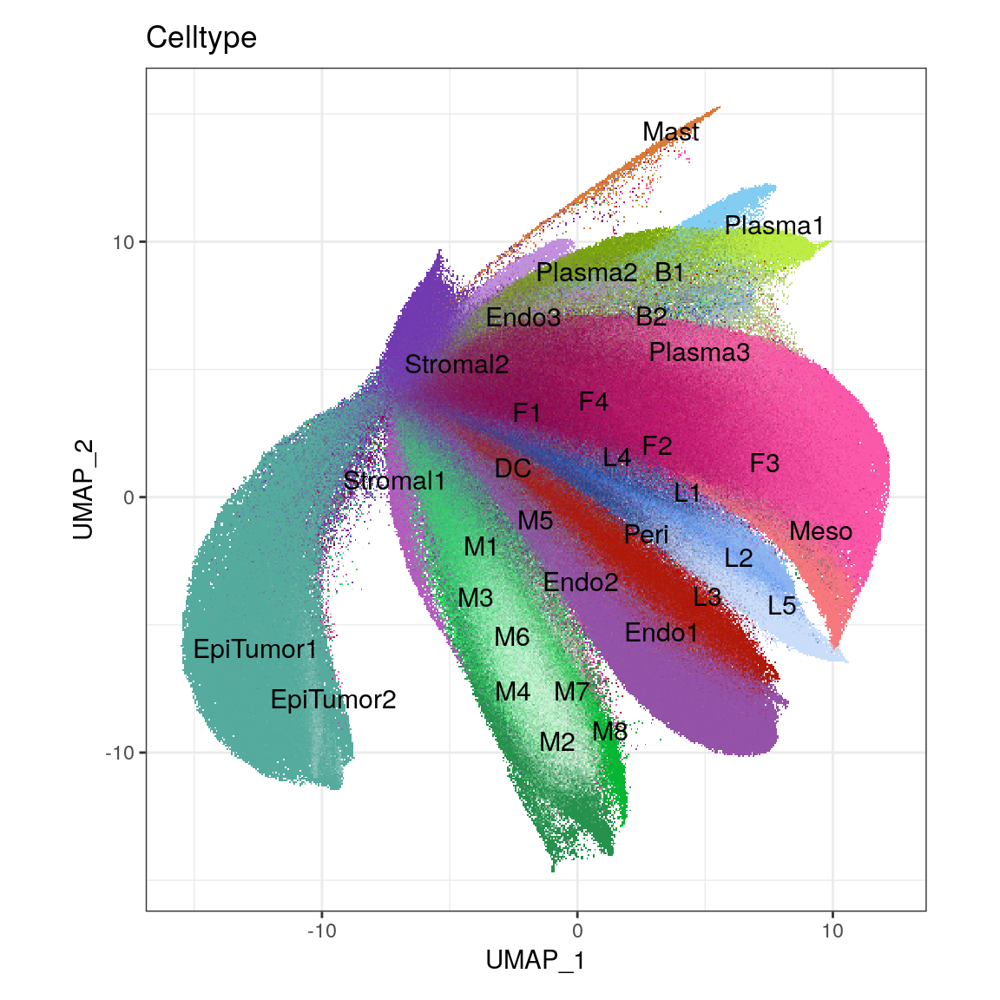

Last updated: 2025-09-16
Checks: 5 2
Knit directory: PIPAC_spatial/
This reproducible R Markdown analysis was created with workflowr (version 1.7.1). The Checks tab describes the reproducibility checks that were applied when the results were created. The Past versions tab lists the development history.
The R Markdown file has unstaged changes. To know which version of
the R Markdown file created these results, you’ll want to first commit
it to the Git repo. If you’re still working on the analysis, you can
ignore this warning. When you’re finished, you can run
wflow_publish to commit the R Markdown file and build the
HTML.
Great job! The global environment was empty. Objects defined in the global environment can affect the analysis in your R Markdown file in unknown ways. For reproduciblity it’s best to always run the code in an empty environment.
The command set.seed(20240917) was run prior to running
the code in the R Markdown file. Setting a seed ensures that any results
that rely on randomness, e.g. subsampling or permutations, are
reproducible.
Great job! Recording the operating system, R version, and package versions is critical for reproducibility.
Nice! There were no cached chunks for this analysis, so you can be confident that you successfully produced the results during this run.
Using absolute paths to the files within your workflowr project makes it difficult for you and others to run your code on a different machine. Change the absolute path(s) below to the suggested relative path(s) to make your code more reproducible.
| absolute | relative |
|---|---|
| /home/hnatri/PIPAC_spatial/ | . |
| /home/hnatri/PIPAC_spatial/code/PIPAC_colors_themes.R | code/PIPAC_colors_themes.R |
| /home/hnatri/PIPAC_spatial/code/plot_functions.R | code/plot_functions.R |
Great! You are using Git for version control. Tracking code development and connecting the code version to the results is critical for reproducibility.
The results in this page were generated with repository version 3bbda19. See the Past versions tab to see a history of the changes made to the R Markdown and HTML files.
Note that you need to be careful to ensure that all relevant files for
the analysis have been committed to Git prior to generating the results
(you can use wflow_publish or
wflow_git_commit). workflowr only checks the R Markdown
file, but you know if there are other scripts or data files that it
depends on. Below is the status of the Git repository when the results
were generated:
Ignored files:
Ignored: .RData
Ignored: analysis/figure/
Ignored: cell_annotation_top_markers_denoist.tsv
Ignored: cell_main_cluster_marker_annotations_denoist.tsv
Ignored: celltype_markers.tsv
Ignored: code/.Rhistory
Ignored: immune_cluster_marker_annotations.tsv
Ignored: immune_cluster_marker_annotations_2ndpass.tsv
Ignored: main_cluster_marker_annotations.tsv
Ignored: nonimmune_cluster_marker_annotations.tsv
Ignored: nonimmune_cluster_marker_annotations_2ndpass.tsv
Untracked files:
Untracked: analysis/.ipynb_checkpoints/
Untracked: analysis/Xenium_preprocess_wholecell.Rmd
Untracked: analysis/annotation_cell.Rmd
Untracked: analysis/clustering.ipynb
Untracked: analysis/compare_cellular_nuclear.Rmd
Untracked: analysis/compare_cellular_nuclear_denoist_annot.Rmd
Untracked: analysis/denoising_cellular_transcripts.Rmd
Untracked: analysis/metrics.Rmd
Untracked: analysis/niche_construction_ncells3k_nneighbors20.Rmd
Untracked: analysis/niche_silhouette.ipynb
Untracked: analysis/plot_PRGS.Rmd
Untracked: analysis/seurat_to_anndata.ipynb
Untracked: code/RSC_latest_EDM_2025-08-06/
Untracked: code/denoist.R
Untracked: code/denoist.Rout
Untracked: code/parse_denoist_res.R
Untracked: code/seurat_to_anndata.R
Untracked: code/slurm.24884614.err
Untracked: code/slurm.24884614.out
Untracked: code/slurm.25014505.err
Untracked: code/slurm.25014505.out
Untracked: niche_composition_k5_n30.pdf
Untracked: timepoint_celltypeprop_barplot_arm2.pdf
Untracked: timepoint_celltypeprop_barplot_arm3.pdf
Untracked: timepoint_nicheprop_barplot_arm2_arm3.pdf
Unstaged changes:
Modified: analysis/Xenium_processing.Rmd
Modified: analysis/add_metadata.Rmd
Modified: analysis/annotation.Rmd
Modified: analysis/arm3_DEGs.Rmd
Modified: analysis/arm3_comparative_analysis.Rmd
Modified: analysis/feature_expression.Rmd
Modified: analysis/niche_construction.Rmd
Modified: analysis/plot_by_group.Rmd
Modified: analysis/post_clustering.Rmd
Modified: analysis/splitting_samples.Rmd
Modified: annotation_dimplot.pdf
Modified: code/PIPAC_colors_themes.R
Modified: code/anndata_to_seurat.R
Modified: code/construct_niches.R
Modified: code/plot_metadata.R
Modified: code/plot_save_pdf.R
Modified: code/rapids_pipeline/.ipynb_checkpoints/clustering-checkpoint.ipynb
Modified: code/rapids_pipeline/.ipynb_checkpoints/seurat_to_anndata-checkpoint.ipynb
Modified: code/rapids_pipeline/clustering.ipynb
Modified: code/rapids_pipeline/seurat_to_anndata.ipynb
Modified: code/run_rscript.sh
Modified: code/update_metadata.R
Modified: demographics_grid.pdf
Note that any generated files, e.g. HTML, png, CSS, etc., are not included in this status report because it is ok for generated content to have uncommitted changes.
These are the previous versions of the repository in which changes were
made to the R Markdown (analysis/add_metadata.Rmd) and HTML
(docs/add_metadata.html) files. If you’ve configured a
remote Git repository (see ?wflow_git_remote), click on the
hyperlinks in the table below to view the files as they were in that
past version.
| File | Version | Author | Date | Message |
|---|---|---|---|---|
| Rmd | 3bbda19 | heinin | 2025-05-13 | Updated annotations, added feature expression by celltype |
| html | 3bbda19 | heinin | 2025-05-13 | Updated annotations, added feature expression by celltype |
| Rmd | fae8c8a | heinin | 2025-02-18 | Added annotations and basic analysis |
| html | fae8c8a | heinin | 2025-02-18 | Added annotations and basic analysis |
| Rmd | 6448204 | heinin | 2025-02-18 | Added annotations |
| html | 6448204 | heinin | 2025-02-18 | Added annotations |
suppressPackageStartupMessages({
library(workflowr)
library(arrow)
library(Seurat)
library(SeuratObject)
library(SeuratDisk)
library(tidyverse)
library(tibble)
library(ggplot2)
library(ggpubr)
library(ggrepel)
library(googlesheets4)
library(workflowr)
library(patchwork)
library(stringr)
library(data.table)})setwd("/home/hnatri/PIPAC_spatial/")
set.seed(9999)
options(scipen = 99999)
options(ggrepel.max.overlaps = Inf)
source("/home/hnatri/PIPAC_spatial/code/PIPAC_colors_themes.R")
source("/home/hnatri/PIPAC_spatial/code/plot_functions.R")seurat_data <- readRDS("/tgen_labs/banovich/PIPAC/Seurat/cell_merged_spatial_filtered_splitsamples_clustered_NC50_NN20_PC20_Seurat_denoIST.rds")
#immune <- readRDS("/tgen_labs/banovich/PIPAC/Seurat/nonimmune_complete_subset_clustered_NC50_NN20_PC20_Seurat_annotated.rds")
#nonimmune <- readRDS("/tgen_labs/banovich/PIPAC/Seurat/immune_complete_subset_clustered_NC50_NN20_PC20_Seurat_annotated.rds")
DimPlot(seurat_data,
group.by = "Annotation",
cols = pipac_celltype_col,
reduction = "umap",
raster = T,
label = T,
repel = T) +
coord_fixed(ratio = 1) +
theme_bw() +
NoLegend() +
ggtitle("Celltype")
# Metadata
gs4_deauth()
metadata <- gs4_get("https://docs.google.com/spreadsheets/d/1Oq09oGVTst_X-oC6-TGnteuSxtmsr_t6pQa0fklx6lk/edit?usp=sharing")
sheet_names(metadata)[1] "All TMAs" "SSM_TMA_Map" "Tissue_19184"
[4] "TIssue_19184_Arm3" "COH_TMA_Map" "Metadata_from_Aimin"
[7] "AW_interpretation" "Rec_Samples_20231212" "Rec_Samples_20240822"metadata <- read_sheet(metadata, sheet = "All TMAs")
intersect(seurat_data$TMA, metadata$TMA)[1] "MR_PIPAC-TMA1" "MR_PIPAC-TMA2" "MR_PIPAC-TMA3" "MR_PIPAC-TMA4"
[5] "MR_PIPAC-TMA5" "MR_PIPAC-TMA6" "MR_PIPAC-TMA7" "MR_PIPAC-TMA8"
[9] "MR_PIPAC-TMA9"setdiff(seurat_data$TMA, metadata$TMA)character(0)setdiff(metadata$TMA, seurat_data$TMA)character(0)colnames(metadata) <- gsub(" ", "_", colnames(metadata))
colnames(metadata) <- gsub("_-_", "_", colnames(metadata))
metadata$Block_ID <- gsub(" ", "_", metadata$Block_ID)
metadata$Block_ID <- gsub("\\/", "_", metadata$Block_ID)
intersect(seurat_data$Sample, metadata$Block_ID) [1] "S21-24369_2A" "S21-7951_5A" "S21-19972_5A"
[4] "S21-12164_1A" "S20-08642-A1" "S21-00034-C1"
[7] "S21-7886_1A" "S21-12261_1A" "S20-09742-B1"
[10] "S21-08053-B1" "S20-11269-A1" "S21-00056-C1"
[13] "FF-22-564_D1" "FF-22-95_C1" "S20-06963-K1"
[16] "S21-00267-E1" "S21-00267-A1" "S21-15128_3A"
[19] "S21-16496_4B" "S20-08642-C1" "S21-09793-D1"
[22] "S20-06963-E1" "S20-10024-C1" "S21-24369_4A"
[25] "S21-3057_2A" "S21-12261_4A" "S21-08053-A1"
[28] "S20-08332-C1" "S21-12164_5A" "S21-01455-C1"
[31] "S20-08642-E1" "S20-10400-E1" "FF-22-1698_C1"
[34] "FF-22-95_B1" "S21-19972_3A" "S21-16496_6A"
[37] "S21-3057_4A" "S21-24369_3A" "S21-7951_2A"
[40] "S21-3057_1A" "S21-00034-D1" "S20-10024-G1"
[43] "S20-10128-B1" "S20-06963-C1" "S20-10024-E1"
[46] "S21-00267-B1" "S21-10183-D1" "S20-09742-A1"
[49] "FF-22-1698_D1" "FF-21-8775_A1" "S21-08053-E1"
[52] "FF-22-564_A1-W0" "S21-09793-B1" "S20-09742-D1"
[55] "S21-12164_2A" "S21-16496_2A" "S20-10400-B1"
[58] "FF-21-8775_B1" "S20-08642-B1" "S21-16496_1A"
[61] "S21-7886_5A" "S21-10183-E1" "S20-11269-D1"
[64] "S21-00056-B1" "S21-15128_2A" "S20-11269-C1"
[67] "S21-12261_5A" "S21-19972_1A" "S21-19972_4A"
[70] "S21-24369_5A" "S21-7951_4A" "S20-08332-A1"
[73] "S21-12164_3A" "S21-12261_2A" "S20-10024-B1"
[76] "S21-00034-F1" "S21-3057_3A" "S21-16496_3A"
[79] "S21-10183-C1" "S20-10024-A1" "FF-22-1698_B1"
[82] "S21-08053-C1" "S21-00267-C1" "FF-21-8775_D1"
[85] "S20-10128-C1" "S21-09793-C1" "S21-09793-E1"
[88] "FF-22-564_B1" "S21-15128_4A" "S21-12261_3A"
[91] "S21-24369_1A" "S21-12164_4B" "S21-15128_5A"
[94] "S21-00056-A1" "S20-11269-B1" "S21-00034-B1"
[97] "S21-7886_6A" "S21-7951_3A" "S20-08642-D1"
[100] "S20-10400-A1" "S20-09742-C1" "FF-21-8775_C1"
[103] "S21-19972_2A" "S21-7886_3A" "S21-7951_1A"
[106] "S21-19972_6A" "S21-10183-A1" "S20-11269-E1"
[109] "S21-00034-E1" "S20-08332-D1" "S21-16496_5A"
[112] "S21-15128_1A" "S20-06963-I1" "S21-3057_5A"
[115] "S20-10400-C1" "S21-01455-A1" "S20-10128-A1"
[118] "S21-08053-D1" "FF-22-564_C1" "BSJ-38-3"
[121] "20-010121N_(3_26_24)" "SS-22-1" "20-010121T_(2_5_24)"
[124] "20-010121T_(6_19_24)" "SF230912-002062" "SF230915-002250"
[127] "BSJ-38-2" "SF230726-002257" "S20-10400-D1"
[130] "SF231027-005404" "S21-09793-A1" "JM-45-4"
[133] "20-010121N_(5_7_24)" "SS-22-4" "FF-22-564_A1"
[136] "S21-01455-D1" "JM-45-1" "BSJ-38-4"
[139] "SS-22-3" "JM-45-2" "BSJ-38-1"
[142] "S21-00267-D1" "JM-45-3" "SS-22-2"
[145] "20-010121T_(5_7_24)" "20-010121N_(6_19_24)" "SF231027-005405"
[148] "SF230915-002249" "20-010121N_(2_5_24)" "SF230912-002063"
[151] "20-010121T_(3_26_24)" "SF230726-002256" setdiff(seurat_data$Sample, metadata$Block_ID)character(0)setdiff(metadata$Block_ID, seurat_data$Sample)[1] "S20-08332-B1"for(column in c("Institution", "Patient_ID", "Timepoint", "Tissue", "Location_Quadrant")){
message(column)
seurat_data[[column]] <- mapvalues(x = seurat_data$Sample,
from = metadata$Block_ID,
to = unlist(metadata[,column]))
}
gs4_deauth()
metadata <- gs4_get("https://docs.google.com/spreadsheets/d/1sXXwOreLxjMSUoPt79c6jmaQpluWkaxA5P5HfDsed3I/edit?usp=sharing")
arm2_metadata <- read_sheet(metadata, sheet = "Arm 2 metadata")
arm3_metadata <- read_sheet(metadata, sheet = "Arm 3 metadata")
intersect(colnames(arm2_metadata), colnames(arm3_metadata)) [1] "Obs" "RPN" "STUDY_SITE"
[4] "GENDER" "ETHNICITY" "race"
[7] "DISEASESITE" "ECOG" "ACTUALWEIGHT"
[10] "txstartdate" "DXHISTOLOGY" "DXSITE"
[13] "initialdxdate" "LINETHERAPY" "PRIORTHERAPYTYPE"
[16] "priorcytoreduction" "lastcontactdate" "furthertxall"
[19] "progressiondt" "vitalstatus1" "deathdate"
[22] "OFFSTUDYREASON" "offstudydate" "OFFTXREASON"
[25] "offtxdate" "asascore1" "asascore2"
[28] "asascore3" "lesionsize1" "lesionsize2"
[31] "lesionsize3" "pipacdate1" "pipacdate2"
[34] "pipacdate3" "ascites1" "ascites2"
[37] "ascites3" "transfusion1" "transfusion2"
[40] "transfusion3" "ebl1" "ebl2"
[43] "ebl3" "pci1" "pci2"
[46] "pci3" "numcycles_pipacsurg" "cyclenum"
[49] "age" "lastfollowdate" "oscensor"
[52] "osmonths" "pfscensor" "pfsmonths" setdiff(colnames(arm2_metadata), colnames(arm3_metadata))[1] "No_of_PIPACs"intersect(colnames(arm3_metadata), colnames(arm2_metadata)) [1] "Obs" "RPN" "STUDY_SITE"
[4] "GENDER" "ETHNICITY" "race"
[7] "DISEASESITE" "ECOG" "ACTUALWEIGHT"
[10] "txstartdate" "DXHISTOLOGY" "DXSITE"
[13] "initialdxdate" "LINETHERAPY" "PRIORTHERAPYTYPE"
[16] "priorcytoreduction" "lastcontactdate" "furthertxall"
[19] "progressiondt" "vitalstatus1" "deathdate"
[22] "OFFSTUDYREASON" "offstudydate" "OFFTXREASON"
[25] "offtxdate" "asascore1" "asascore2"
[28] "asascore3" "lesionsize1" "lesionsize2"
[31] "lesionsize3" "pipacdate1" "pipacdate2"
[34] "pipacdate3" "ascites1" "ascites2"
[37] "ascites3" "transfusion1" "transfusion2"
[40] "transfusion3" "ebl1" "ebl2"
[43] "ebl3" "pci1" "pci2"
[46] "pci3" "numcycles_pipacsurg" "cyclenum"
[49] "age" "lastfollowdate" "oscensor"
[52] "osmonths" "pfscensor" "pfsmonths" arm2_metadata$Arm <- "Arm2"
arm3_metadata$Arm <- "Arm3"
all_metadata <- rbindlist(list(arm2_metadata, arm3_metadata), fill = TRUE)
# Adding patient ID
all_metadata$Site_abbr <- ifelse(all_metadata$STUDY_SITE == "Northwell Health Cancer Institute", "S21-NWH",
ifelse(all_metadata$STUDY_SITE == "Mayo Clinic (Florida)", "MFL", "COH"))
seurat_data$Patient_ID <- gsub("Mayo", "MFL", seurat_data$Patient_ID)
#immune$Patient_ID <- gsub("Mayo", "MFL", immune$Patient_ID)
#nonimmune$Patient_ID <- gsub("Mayo", "MFL", nonimmune$Patient_ID)
all_metadata$RPN <- str_pad(all_metadata$RPN, 3, pad = "0")
all_metadata$Patient_ID <- paste0(all_metadata$Site_abbr, "-", all_metadata$RPN)
intersect(seurat_data$Patient_ID, all_metadata$Patient_ID) [1] "S21-NWH-012" "S21-NWH-011" "S21-NWH-009" "COH-004" "COH-001"
[6] "COH-015" "COH-006" "COH-007" "MFL-019" "MFL-018"
[11] "COH-008" "MFL-017" "COH-038" "MFL-046" "COH-022"
[16] "MFL-049" "MFL-040" "MFL-043" "COH-045" setdiff(seurat_data$Patient_ID, all_metadata$Patient_ID)character(0)setdiff(all_metadata$Patient_ID, seurat_data$Patient_ID) [1] "COH-025" "S21-NWH-030" "MFL-052" "COH-044" "S21-NWH-048"
[6] "MFL-027" "S21-NWH-039" "MFL-037" "COH-056" "MFL-023"
[11] "COH-026" "S21-NWH-020" "S21-NWH-034"# Adding all metadata
for (m in setdiff(colnames(all_metadata), c("Obs"))){
seurat_data@meta.data[[m]] = plyr::mapvalues(x = seurat_data@meta.data$Patient_ID,
from = all_metadata$Patient_ID,
to = all_metadata[[m]])
seurat_data@meta.data[[m]][-which(seurat_data@meta.data$Patient_ID %in% all_metadata$Patient_ID)] <- NA
}
saveRDS(seurat_data, "/tgen_labs/banovich/PIPAC/Seurat/cell_merged_spatial_filtered_splitsamples_clustered_NC50_NN20_PC20_Seurat_denoIST_metadata.rds")
#for (m in setdiff(colnames(all_metadata), c("Obs"))){
# immune@meta.data[[m]] = plyr::mapvalues(x = immune@meta.data$Patient_ID,
# from = all_metadata$Patient_ID,
# to = all_metadata[[m]])
#
# immune@meta.data[[m]][-which(immune@meta.data$Patient_ID %in% all_metadata$Patient_ID)] <- NA
#}
#
#saveRDS(immune, "/tgen_labs/banovich/PIPAC/Seurat/PIPAC_immune_NC50_NN20_PC20_Seurat_annotated_metadata.rds")
#
#for (m in setdiff(colnames(all_metadata), c("Obs"))){
# nonimmune@meta.data[[m]] = plyr::mapvalues(x = nonimmune@meta.data$Patient_ID,
# from = all_metadata$Patient_ID,
# to = all_metadata[[m]])
#
# nonimmune@meta.data[[m]][-which(nonimmune@meta.data$Patient_ID %in% all_metadata$Patient_ID)] <- NA
#}
#
#saveRDS(nonimmune, "/tgen_labs/banovich/PIPAC/Seurat/PIPAC_nonimmune_NC50_NN20_PC20_Seurat_annotated_metadata.rds")
#
sessionInfo()R version 4.3.0 (2023-04-21)
Platform: x86_64-pc-linux-gnu (64-bit)
Running under: Ubuntu 22.04.3 LTS
Matrix products: default
BLAS: /usr/lib/x86_64-linux-gnu/openblas-pthread/libblas.so.3
LAPACK: /usr/lib/x86_64-linux-gnu/openblas-pthread/libopenblasp-r0.3.20.so; LAPACK version 3.10.0
locale:
[1] LC_CTYPE=en_US.UTF-8 LC_NUMERIC=C
[3] LC_TIME=en_US.UTF-8 LC_COLLATE=en_US.UTF-8
[5] LC_MONETARY=en_US.UTF-8 LC_MESSAGES=en_US.UTF-8
[7] LC_PAPER=en_US.UTF-8 LC_NAME=C
[9] LC_ADDRESS=C LC_TELEPHONE=C
[11] LC_MEASUREMENT=en_US.UTF-8 LC_IDENTIFICATION=C
time zone: Etc/UTC
tzcode source: system (glibc)
attached base packages:
[1] grid stats graphics grDevices utils datasets methods
[8] base
other attached packages:
[1] ComplexHeatmap_2.18.0 viridis_0.6.3 viridisLite_0.4.2
[4] circlize_0.4.15 plyr_1.8.8 RColorBrewer_1.1-3
[7] data.table_1.14.8 patchwork_1.1.2 googlesheets4_1.1.0
[10] ggrepel_0.9.3 ggpubr_0.6.0 lubridate_1.9.2
[13] forcats_1.0.0 stringr_1.5.0 dplyr_1.1.2
[16] purrr_1.0.2 readr_2.1.4 tidyr_1.3.0
[19] tibble_3.2.1 ggplot2_3.4.2 tidyverse_2.0.0
[22] SeuratDisk_0.0.0.9021 Seurat_5.0.1 SeuratObject_5.0.2
[25] sp_1.6-1 arrow_12.0.0 workflowr_1.7.1
loaded via a namespace (and not attached):
[1] RcppAnnoy_0.0.20 splines_4.3.0 later_1.3.1
[4] cellranger_1.1.0 polyclip_1.10-4 fastDummies_1.7.3
[7] lifecycle_1.0.3 rstatix_0.7.2 doParallel_1.0.17
[10] rprojroot_2.0.3 globals_0.16.2 processx_3.8.1
[13] lattice_0.21-8 hdf5r_1.3.8 MASS_7.3-60
[16] backports_1.4.1 magrittr_2.0.3 plotly_4.10.2
[19] sass_0.4.6 rmarkdown_2.22 jquerylib_0.1.4
[22] yaml_2.3.7 httpuv_1.6.11 sctransform_0.4.1
[25] spam_2.9-1 spatstat.sparse_3.0-1 reticulate_1.29
[28] cowplot_1.1.1 pbapply_1.7-0 abind_1.4-5
[31] Rtsne_0.16 BiocGenerics_0.48.1 git2r_0.32.0
[34] S4Vectors_0.40.2 IRanges_2.36.0 irlba_2.3.5.1
[37] listenv_0.9.0 spatstat.utils_3.0-3 goftest_1.2-3
[40] RSpectra_0.16-1 spatstat.random_3.1-5 fitdistrplus_1.1-11
[43] parallelly_1.36.0 leiden_0.4.3 codetools_0.2-19
[46] tidyselect_1.2.0 shape_1.4.6 farver_2.1.1
[49] stats4_4.3.0 matrixStats_1.0.0 spatstat.explore_3.2-1
[52] googledrive_2.1.0 jsonlite_1.8.5 GetoptLong_1.0.5
[55] ellipsis_0.3.2 progressr_0.13.0 iterators_1.0.14
[58] ggridges_0.5.4 survival_3.5-5 foreach_1.5.2
[61] tools_4.3.0 ica_1.0-3 Rcpp_1.0.10
[64] glue_1.6.2 gridExtra_2.3 xfun_0.39
[67] withr_2.5.0 fastmap_1.1.1 fansi_1.0.4
[70] callr_3.7.3 digest_0.6.31 timechange_0.2.0
[73] R6_2.5.1 mime_0.12 colorspace_2.1-0
[76] scattermore_1.2 tensor_1.5 spatstat.data_3.0-1
[79] utf8_1.2.3 generics_0.1.3 httr_1.4.6
[82] htmlwidgets_1.6.2 whisker_0.4.1 uwot_0.1.14
[85] pkgconfig_2.0.3 gtable_0.3.3 lmtest_0.9-40
[88] htmltools_0.5.5 carData_3.0-5 dotCall64_1.0-2
[91] clue_0.3-64 scales_1.2.1 png_0.1-8
[94] knitr_1.43 rstudioapi_0.14 rjson_0.2.21
[97] tzdb_0.4.0 reshape2_1.4.4 nlme_3.1-162
[100] curl_5.0.1 cachem_1.0.8 zoo_1.8-12
[103] GlobalOptions_0.1.2 KernSmooth_2.23-21 parallel_4.3.0
[106] miniUI_0.1.1.1 pillar_1.9.0 vctrs_0.6.5
[109] RANN_2.6.1 promises_1.2.0.1 car_3.1-2
[112] xtable_1.8-4 cluster_2.1.4 evaluate_0.21
[115] cli_3.6.1 compiler_4.3.0 rlang_1.1.1
[118] crayon_1.5.2 future.apply_1.11.0 ggsignif_0.6.4
[121] labeling_0.4.2 ps_1.7.5 getPass_0.2-4
[124] fs_1.6.2 stringi_1.7.12 deldir_1.0-9
[127] assertthat_0.2.1 munsell_0.5.0 lazyeval_0.2.2
[130] spatstat.geom_3.2-1 Matrix_1.6-5 RcppHNSW_0.5.0
[133] hms_1.1.3 bit64_4.0.5 future_1.32.0
[136] shiny_1.7.4 highr_0.10 ROCR_1.0-11
[139] gargle_1.4.0 igraph_1.4.3 broom_1.0.4
[142] bslib_0.4.2 bit_4.0.5